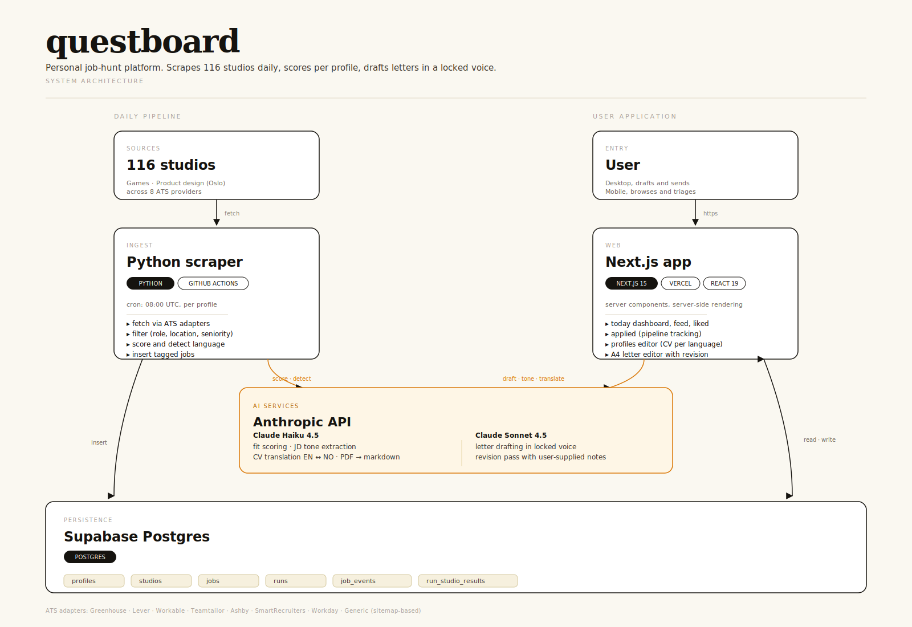
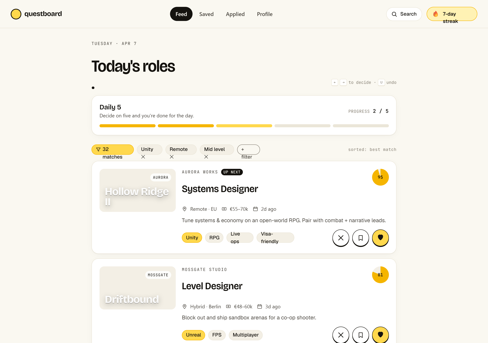

What I learned building my own job search agent
A personal AI system that scrapes job boards daily, scores postings against my CV, and drafts tailored application letters in my tone of voice. Built because applying to jobs the normal way wasn't working for me.
The actual problem
Job applications are a small task disguised as a big one. Open LinkedIn, scroll, read a posting, decide if it fits, rewrite my CV bullet points for the role, draft a cover letter that doesn't sound like a template, send. Repeat fifty times.
Each step is fine. The pile is what breaks you.
I noticed I was avoiding the whole process even when I wanted to apply. Not because writing is hard. Because the activation energy to start was higher than the energy to write any single piece of it once I was in. The work was easy. Getting to the work was the wall.
So I built a system that does the front half of the process before I touch it. By the time I sit down, the inventory is curated, the scoring is honest, and the cover letter draft is already in my voice. My job is editing and deciding, not starting.
The honest scoring decision
The interesting part isn't the scraping. It's the scoring prompt.
Most AI job-matching tools optimize for "your application is a match!" because optimism feels helpful and gets users to engage. I wanted the opposite. A system that mostly says no, and is useful precisely because of that.
The scoring prompt tells Claude to score harshly on role family, seniority, and skill fit. A 9-10 is "worth applying." A 7-8 is "good match with one gap." Below 7, the job goes to the dashboard but quietly, no notification.
I'd rather see five honest 8s than fifty fake 9s.
This sounds obvious until you build it. The pressure to inflate is everywhere: more matches means more apparent value, positive scores feel encouraging, the model defaults to generous. You have to fight it.
I tuned the prompt over several iterations to keep the rubric harsh, added concrete examples of what each band looks like, and gave it explicit guidance on location handling for Nordic vs. EU vs. US-only roles.
The result: a daily list of new jobs, scored 1-10, each with a one-sentence rationale. Most days I look at the 8+ band, ignore the rest, and decide which to actually apply to. That's the value. Not volume. Signal.

What's underneath
The system runs daily. A Python scraper hits a mix of generic ATS endpoints and studio-specific job boards, fetching in parallel where possible and sequentially where rate limits demand.
Cheap filters run first: title keywords, location, seniority, exclusions. Survivors get deduped against the existing database, so the system only scores genuinely new postings. Only then does the expensive scoring step run, against a hard cap per profile to defend against runaway behavior if a scraper breaks.
The CV is sent with prompt caching, so the cached portion costs ~80% less on repeated calls within a run. Combined with the dedupe step keeping the daily scoring count low, the whole thing runs on a few cents a day. Most "AI for X" tools fail in the same way: they don't decide what good looks like, so the model decides for them. Cost discipline follows the same principle.

Each profile has its own CV variant, vertical filters, and scoring context. I can target AI design roles and game design roles in parallel without one diluting the other. The dashboard shows everything in one view, with status, rationale, and the original posting.
Cover letter drafting is a separate step, triggered manually, using my tone-of-voice guidelines and the specific job description.
Stack: Python scraper, Supabase backend, Next.js dashboard on Vercel, Claude Haiku for scoring, Claude Sonnet for letter drafting. Everything is open source on GitHub.
What I've learned so far
I've used Questboard to apply to two jobs. Small sample, but both were genuinely strong fits, scored 8 and 9 by the system. The 8 was rejected. The 9 is pending.
The point isn't the conversion rate yet. It's that the system filtered me from a noisy daily list down to applications I felt good about sending. That's the part that was breaking before.
The harder problem turned out to be the scoring rubric, not the scraping. Once I committed to harsh, honest scoring with explicit examples, the rest of the system became useful. Without that, more data would have just been more noise.
I also built this knowing recruiters might see the project and recognize that I might be using it to apply to their company. That felt like a feature, not a bug. If a recruiter is suspicious of someone who built infrastructure to make their applications more thoughtful, we probably aren't a good fit anyway.